Selected Work · Collection
Working Class
Working Class
Work is a language most people only notice when it stops. It moves through hands and backs, through heat and hours, through bodies that carry more than they are ever credited for. Here, labor is not a statistic or a headline. It is presence. It is dignity under pressure. It is the quiet proof of who keeps the world standing.
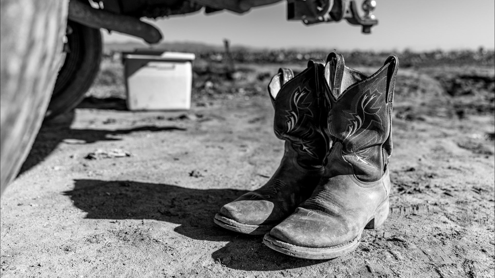
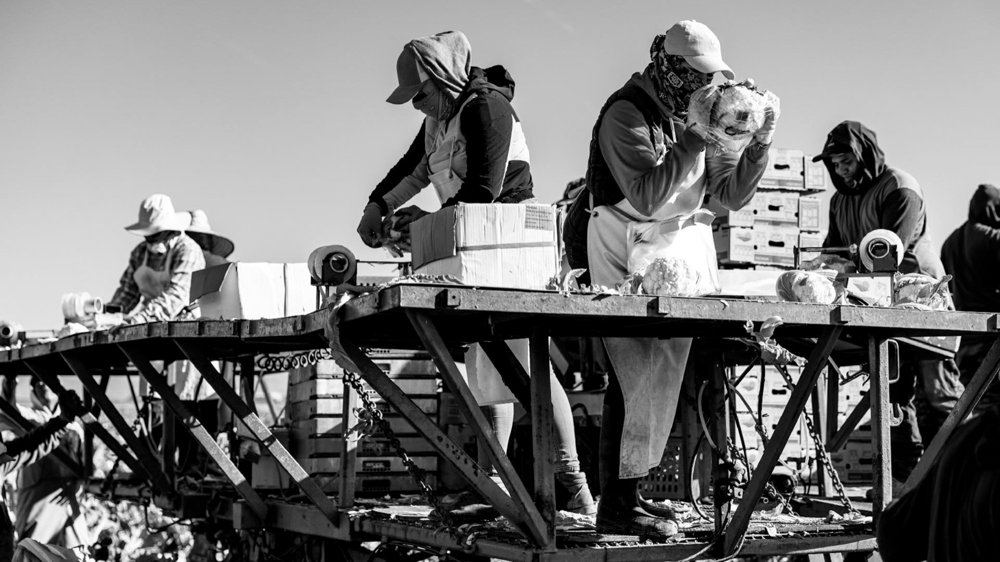
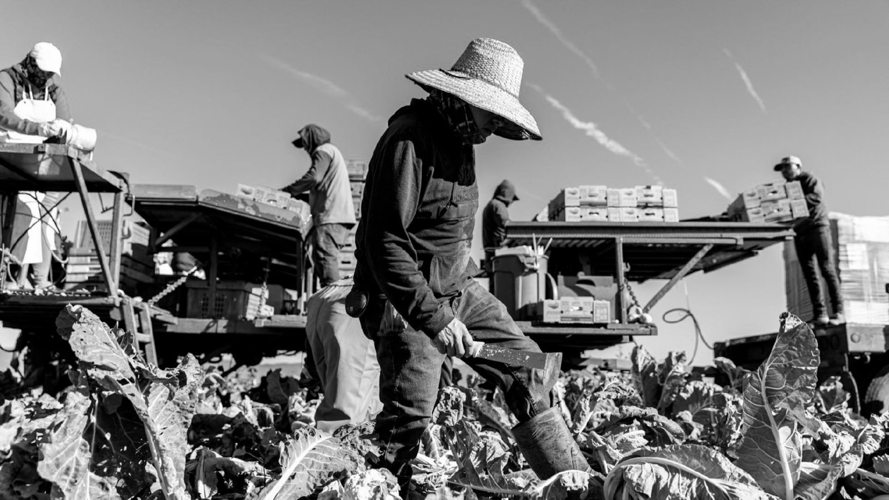
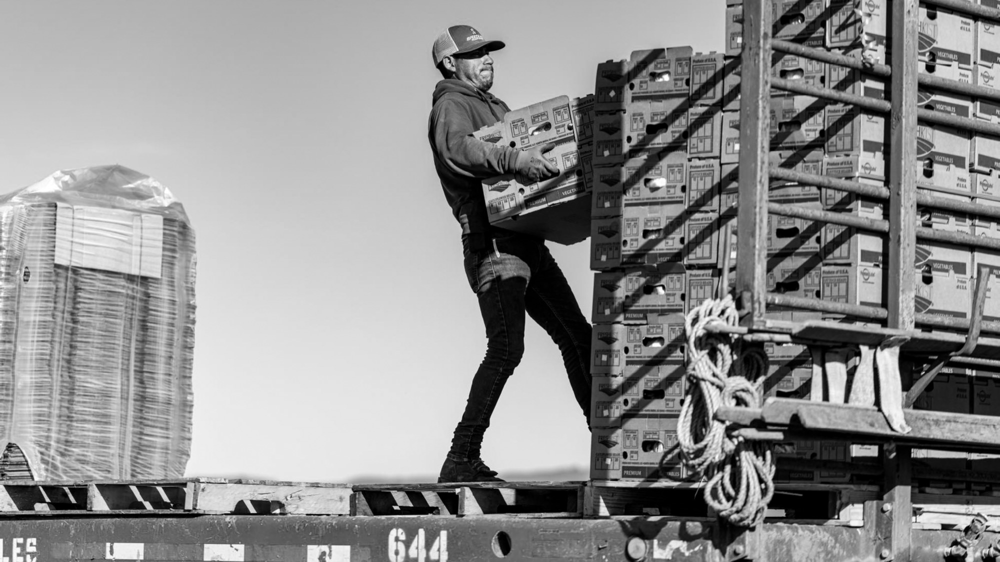
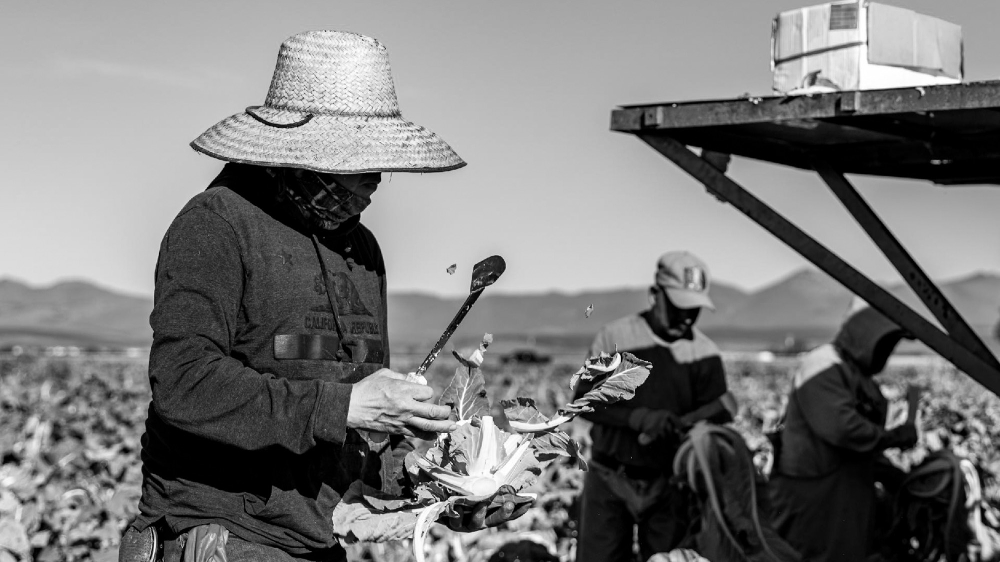
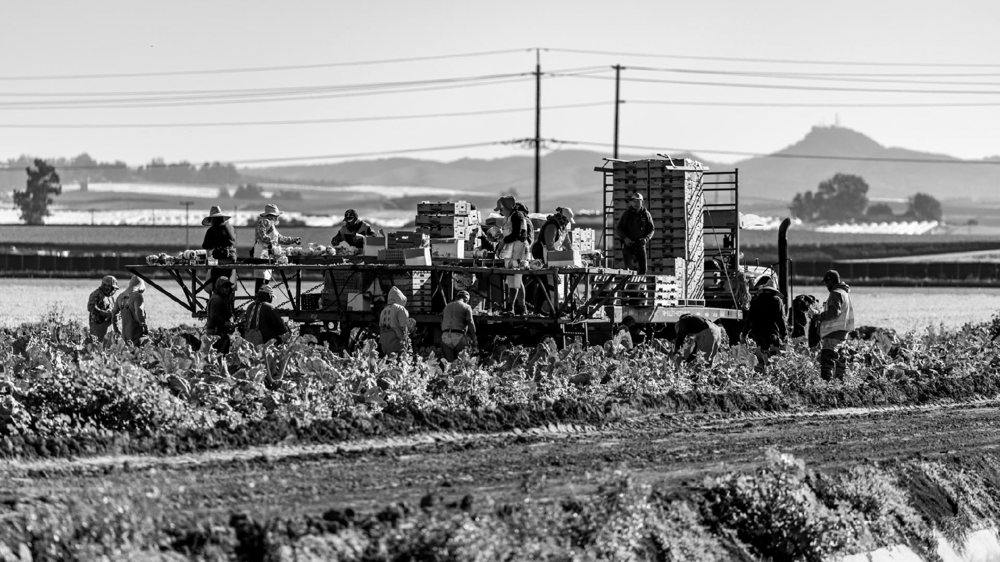
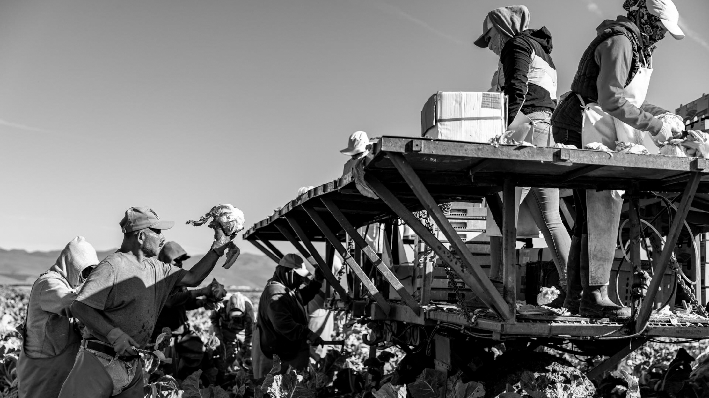
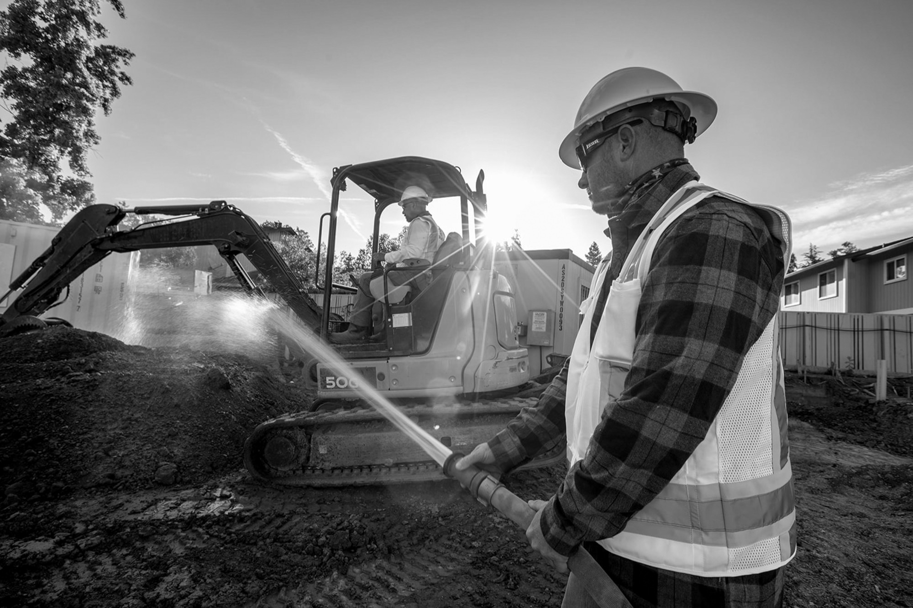
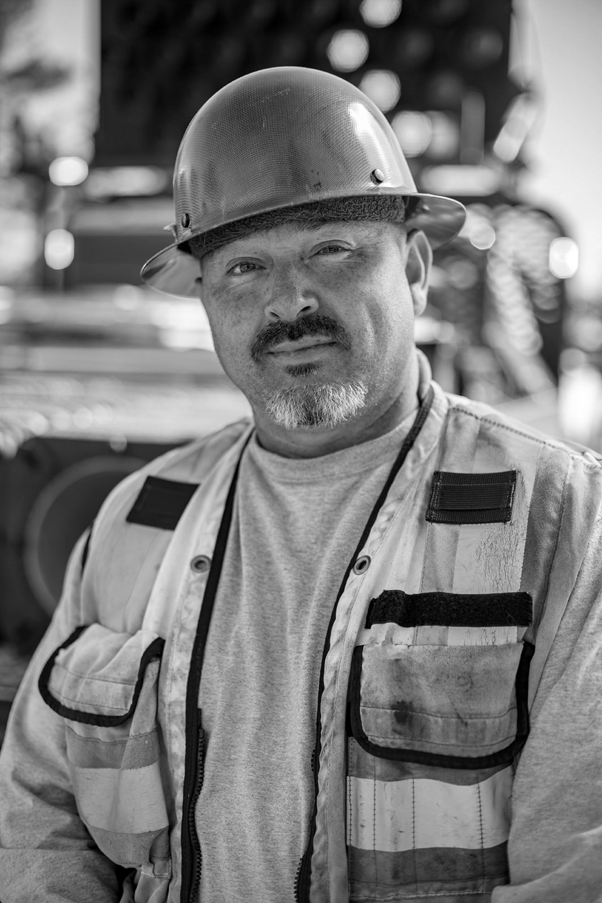
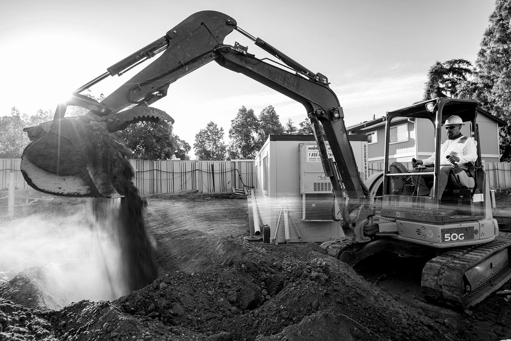
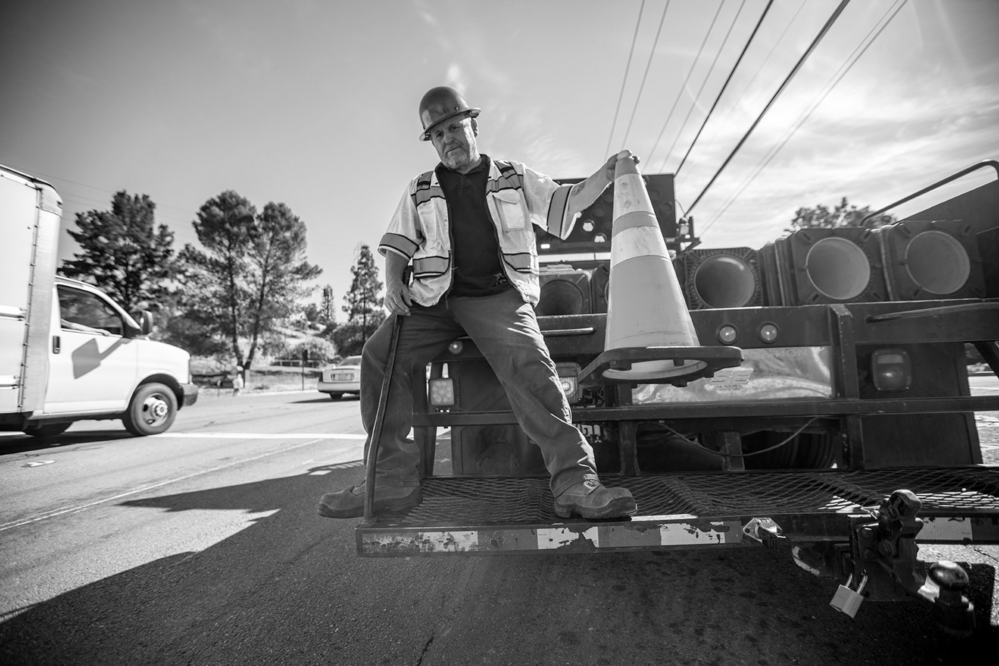